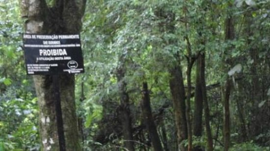

Informações Adicionais
A Cachoeira do Laranjal possui trilhas que levam a mirantes, permitindo uma vista espetacular da região. É um ótimo local para piqueniques e banhos refrescantes.
Localização
Veja no mapa abaixo como chegar à Cachoeira do Laranjal.